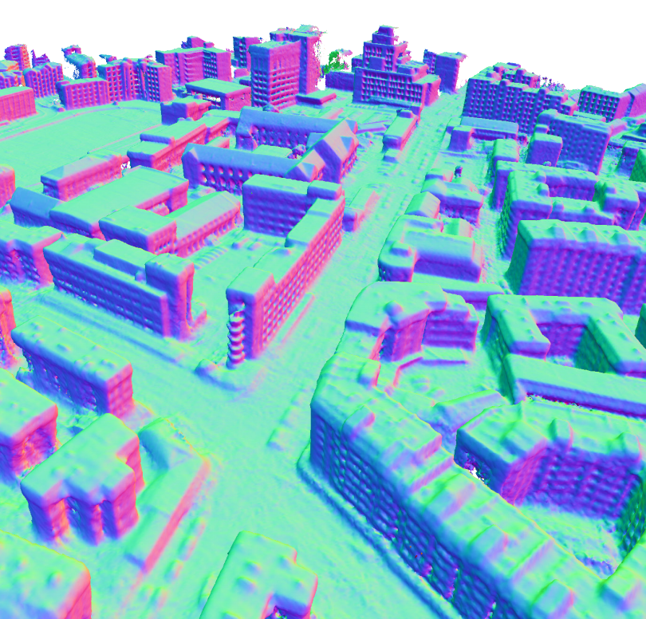
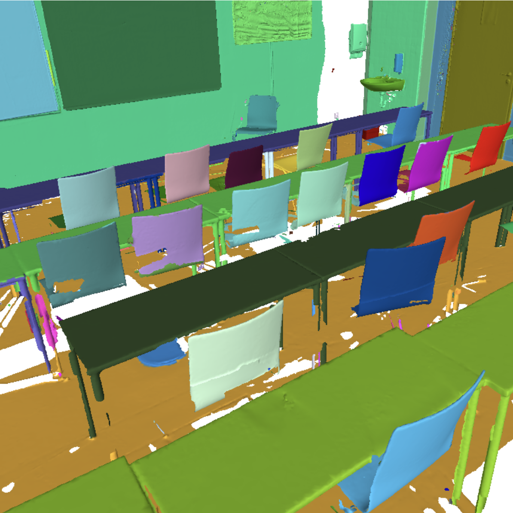

Carnegie Mellon University
M.S. in Robotics, Aug. 2025 - Aug. 2027(expected)
BiographyHi there, thanks for dropping by! 👋I am a Master's student at the Robotics Institute, Carnegie Mellon University, where I have the privilege to be advised by Prof.Katerina Fragkiadaki. Prior to CMU, I obtained my B.S. degree in Computer Science from Beijing Normal University in July 2025. During my undergraduate studies, I also spent an unforgettable year at Zhejiang University to work with Prof. Xiaowei Zhou and Prof. Sida Peng. I am interested in Robot Learning and Multi-modal Agents. My goal is to develop machines capable of open-world spatial-temporal understanding, responding intelligently to multi-modal inputs and yielding versatile actions in the physical world. Currently, I focus on Vision-Language-Action models and Real-to-Sim-to-Real frameworks. |
News
[2025/08/11] I joined Carnegie Mellon University as a master's student!
[2025/07/01] I graduated from Beijing Normal University! Goodbye BNU :) 🎓🎉
[2025/04/04] Murre is selected for oral presentation!
[2025/02/27] Murre is accepted at CVPR 2025!
[2024/07/01] SAM-Graph is accepted at ECCV 2024!
[2025/07/01] I graduated from Beijing Normal University! Goodbye BNU :) 🎓🎉
[2025/04/04] Murre is selected for oral presentation!
[2025/02/27] Murre is accepted at CVPR 2025!
[2024/07/01] SAM-Graph is accepted at ECCV 2024!
Education
Beijing Normal University
B.S. in Computer Science, Sep. 2021 - Jul. 2025
(Majoring in Biology, Sep. 2019 - Jul.2021)
B.S. in Computer Science, Sep. 2021 - Jul. 2025
(Majoring in Biology, Sep. 2019 - Jul.2021)
Experience
GRASP lab, University of Pennsylvania
Visiting Student, Jun. 2024 - Nov. 2024
Advisor: Prof. Kostas Daniilidis
Visiting Student, Jun. 2024 - Nov. 2024
Advisor: Prof. Kostas Daniilidis
State Key Laboratory of CAD&CG, Zhejiang University
Visiting Student, Aug. 2023 - Jun. 2024
Advisor: Prof. Xiaowei Zhou & Prof. Sida Peng
Visiting Student, Aug. 2023 - Jun. 2024
Advisor: Prof. Xiaowei Zhou & Prof. Sida Peng
Publications
Representative works are highlighted (* denotes equal contribution)|
4DNeX: Feed-Forward 4D Generative Modeling Made Easy Zhaoxi Chen*, Tianqi Liu*, Long Zhuo*, Jiawei Ren, Zeng Tao, He Zhu, Fangzhou Hong, Liang Pan, Ziwei Liu
Paper under review
Project Page
Paper
Code
|
|
|  |
Multi-view Reconstruction via SfM-Guided Monocular Depth Estimation Haoyu Guo*, He Zhu*, Sida Peng, Haotong Lin, Yunzhi Yan, Tao Xie, Wenguan Wang, Xiaowei Zhou, Hujun Bao
Computer Vision and Pattern Recognition 2025 (CVPR 2025, Oral Presentation, Top 3.3%)
Project Page
Paper
Code
|
|  |
SAM-Guided Graph Cut for 3D Instance Segmentation
Haoyu Guo*, He Zhu*, Sida Peng, Yuang Wang, Yujun Shen, Ruizhen Hu, Xiaowei Zhou
European Conference on Computer Vision 2024 (ECCV 2024)
Project Page
Paper
Code
|
This page is last updated at
Adapted from this wonderful website: https://xiuyuliang.cn/